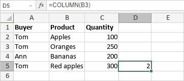

COLUMN Funkcija
Funkcija COLUMN je jedna od funkcija za pretragu i reference. Koristi se za vraćanje broja kolone ćelije.
Sintaksa
COLUMN([reference])
Funkcija COLUMN ima sledeći argument:
| Argument | Opis |
|---|---|
| reference | Referenca na ćeliju. |
Napomene
reference je opcioni argument. Ako se izostavi, funkcija će vratiti broj kolone ćelije u kojoj je prikazan rezultat funkcije COLUMN.
Imajte u vidu da je ovo matrična formula. Da biste saznali više, pročitajte članak Umetanje matričnih formula.
Kako primeniti funkciju COLUMN.
Primeri
Slika ispod prikazuje rezultat koji vraća funkcija COLUMN.
